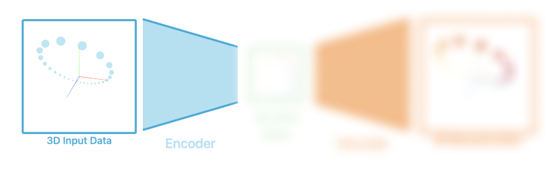

Autoencoders have many different applications, but most notably
they have been used as generative models and for dimensionality
reduction
Specific applications will be discussed in the
overview section and throughout the
rest of the article.. Although autoencoders are used to learn complex
representations, the architecture is actually
very simple! Autoencoders just deconstruct down,
then learn to reconstruct back up.
 2: You can
hover over a datapoint to see where it is reduced down to 2D
and reconstructed back to 3D.
2: You can
hover over a datapoint to see where it is reduced down to 2D
and reconstructed back to 3D.
If you want to dive slightly deeper, the rest of the article
will go over
structure of the autoencoder in context
to the 1 and will
be broken up into
 Encoder,
Latent Space, and
Decoder
.
Encoder,
Latent Space, and
Decoder
.
Structure
As mentioned before, Autoencoders are a type of neural network
architecture. More specifically they would fall into
unsupervised learning because their validation label is the
input itself, or some variation of the input
VAE, DAE, etc.... Often they are used
as a way to reduce down dimensions. For example, in
1, We start with
3D Input Data and reduce down to 2D, then reconstruct back up to
3D. After some training, we can observe the 2D Latent Space
looks very similar to the 3D representation but with one reduced
dimension.
Encoder

The Encoder portion of the autoencoder, takes the input of some
dimension
m
, then creates a bottleneck by reducing the dimensions down to
n, where
m > n. Similar to compression, we are
going from larger to smaller dimensions. Hence, the
representation of the encoder from
1 is a trapezoid,
starting with a larger base, moving to a smaller one
In 1 we go
from 3 Dimensional to 2 Dimensional Data, but other examples
not limited to this. . If there was no bottleneck and
m = n, there would be nothing to learn
and no reduction would take place: weights would go to
1.
PUT THE INTERACTIVE FIGURE ABOVE THIS You could also interpret
this as a learnable transformation mapping from
m to n. And in
1's case, from
\mathbb{R}^3 \rightarrow \mathbb{R}^2.
Latent Space
The Latent Space is all of the outputs vectors from the Encoder.
In our case since the encoder had a bottleneck of 2 outputs, we
can plot the outputs in a 2D Coordinate system. Among being able
to do vector math here to find different combinations, we can
visualize the dimensionality reduction in something that is
intutive (visualzing 2D much easier than
nD).
ABOVE OR BELOW HERE PUT THE ANIMATION One very good way to
visualize the latent space is to compute the gradient of the
loss with respect to the latent space/ encoder output. Now that
we have the direction of steepest ascent we can negate it and
apply learning rate. Doing this we can show where each point
wants to move to lower loss very similar to what was done in GAN
Lab. But now doing this with
the latent space, we can get an idea where the latent space
wants to move to lower the loss.
Decoder
The decoder takes the bottleneck, of 2 in our case, and tries to
reconstruct the original. This is done with a loss function,
adequatly called reconstruction loss, that compares the original
input to the reconstructed input. From this we can backpropagate
and optimize to train our network.
Similar to the description of the encoder, we are mapping from
the bottle neck to the original reconstruction. From
\mathbb{R}^2 \rightarrow \mathbb{R}^3,
in our case. It doesnt have to be the case that the encoder and
decoder are symetrical.
Conclusion
Conclusion, vanilla autoencoders are not diffult to understand,
as you know by now, but from the pieces shown, there are
improvments to be made in certial applications. For example,
vector math over the latent space sometimes is rough with blank
spots, so modified loss to straighten out the latent space has
come, VAE, etc..
With innovation comes more interesting applications and
potential visualizations. Take the mnist dataset, put preview to
a few images.
By training an autoencoder from
28^2 = 784 with a bottleneck of 2. We
can get some see clustering in 2d space. Hover over the latent
space below and see the clustering with reconstruction.
Interesting Applications of this architecture, seem endless,
coarsegraing for ECA to learn emergent behavior, generative
models, insert other... Wiht innovations.... A architecture here
to stay.